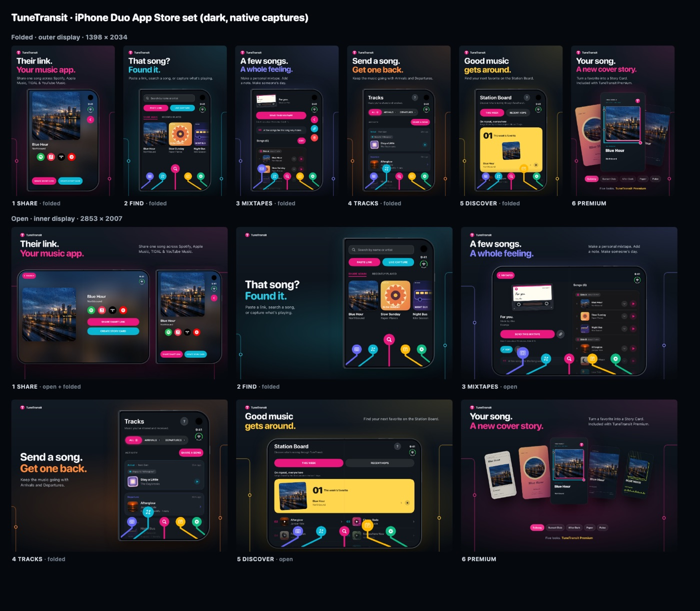
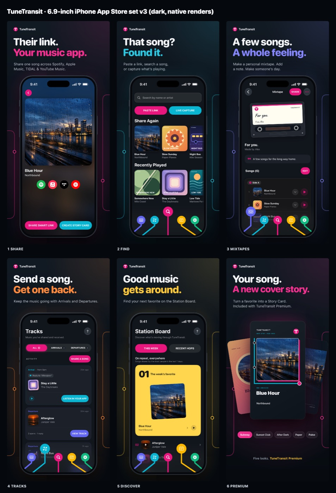
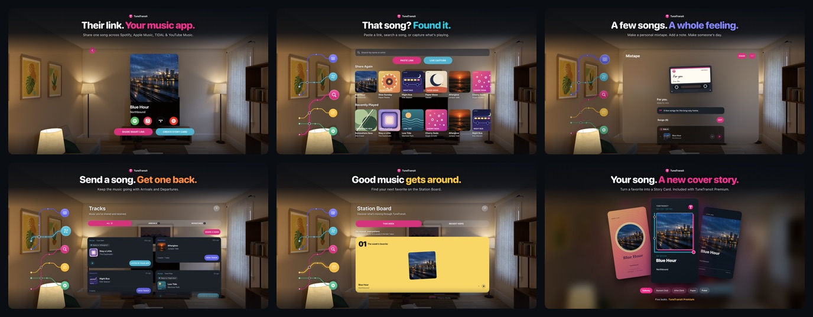
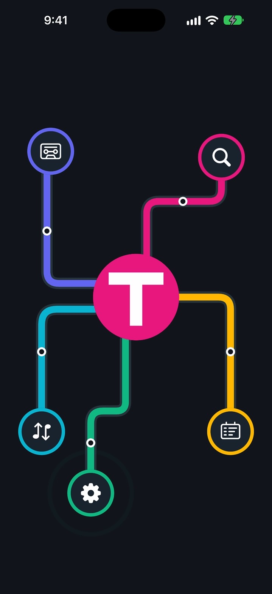

PRESS KIT
Hi, I make TuneTransit.
I’m Anthony Farino. TuneTransit turns any song into one link that opens in Apple Music, Spotify, TIDAL or YouTube Music, and I design it, build it and answer its email myself.
This page has the facts, a 33-second look at the app, descriptions you can copy, the release history and every image a story might need.
Want to try Premium before you write? Ask for a Lifetime code.
- Developer
- Anthony Farino, independent
- Latest version
- 3.1.6, November 11, 2026
- First released
- June 2025
- Platforms
- iPhone, iPad, Mac, Apple Vision Pro, iPhone Duo
- Works with
- Apple Music, Spotify, TIDAL, YouTube Music
- Price
- Free. Premium is $1.99 a month or $9.99 once.
- Requires
- iOS 17 or later · English
- Contact
- mail@tunetransit.app
The first ride
What someone sees the first time they open TuneTransit, recorded from the app with no sound. They pick a song, watch it ride to every service, and see what their friend gets.
The full-size recording is in Downloads.
Why it exists
My friends are split across Spotify, Apple Music and YouTube Music. Every song we sent each other turned into the same routine: “what’s this called?”, a search, and often the wrong version. TuneTransit started as a fix for that one small, constant annoyance.
The person receiving a song should never have to do anything. No download, no account, just their own music app.
It’s been on the App Store since June 2025, and it’s still one person: the design, the code, this website and the inbox.
Descriptions you can copy
Use them as they are or rewrite them. Either is fine with me.
-
One line
17 wordsTuneTransit turns any song into one link that opens in Apple Music, Spotify, TIDAL or YouTube Music.
-
Short
60 wordsTuneTransit is a music-sharing app for iPhone, iPad, Mac, Apple Vision Pro and iPhone Duo. Search for a song or paste a link, and it makes one Smart Link that opens in Apple Music, Spotify, TIDAL or YouTube Music. The person you send it to doesn’t need the app or an account, and you can see when they open it.
-
Long
160 wordsTuneTransit solves music’s version of the green-bubble problem: sending a song to someone who uses a different streaming service. Search for a song, paste a link from another app, or let Live Capture identify what’s playing nearby, and TuneTransit makes one Smart Link that opens in Apple Music, Spotify, TIDAL or YouTube Music. Friends don’t need the app to listen, and they can send a song back from the link’s page.
Tracks keeps every song you send and receive, with a receipt showing how many times each link was opened and in which app. Mixtapes bundle songs with a personal note, Story Cards turn a song into an Instagram Story, and the Station Board shows what TuneTransit listeners are sharing this week. It also works from Siri, Shortcuts, Messages and the share sheet.
TuneTransit runs on iPhone, iPad, Mac, Apple Vision Pro and iPhone Duo. It’s free, with an optional Premium upgrade, and is made by independent developer Anthony Farino.
Stops worth writing about
-
Their link, your app
Paste a link from any of the four services, search by name, or let Live Capture name what’s playing nearby. Matching keeps the exact recording you meant, not the remix or the live take, and part of it runs on device with Core ML.
-
Know when they listen
Every link you send keeps a receipt, like “3 opens · 2 Spotify, 1 Apple Music”. You get a notification the first time someone opens it, and they can send a song back from the link’s page without installing anything.
-
Mixtapes, with a note
Name the tape, say why each song made the cut, split it into Side A and Side B, and send it as one link. Free mixtapes hold 5 songs, and Premium mixtapes hold up to 500.
-
The Station Board
The songs shared by the most people on TuneTransit this week, and a running list of shared links as they get opened.
-
Made for iPhone Duo
Folded, every screen uses the whole cover display around its vertical status bar. Open, Search, Mixtapes and Tracks spread across the inner display.
-
On Apple Vision Pro
The tab bar becomes a small subway map floating beside the window: five colored stations on a rail, with Search in the middle. TuneTransit has been on Vision Pro since February 2026.
Also in the app: Story Cards in five designs, a Messages app, Siri and Shortcuts actions, and Home and Lock Screen widgets.
The route so far
Major releases. Every version is listed on the App Store.
| DATE | VERSION | WHAT CHANGED |
|---|---|---|
| Nov 11, 2026 | 3.1.6LATEST | A smoother launch and better battery life. |
| Nov 2, 2026 | 3.1.4 | Open receipts and first-open notifications, and the Messages app opened to everyone. |
| Oct 18, 2026 | 3.1 | Made for iPhone Duo, folded and open. |
| Oct 5, 2026 | 3.0 | Rebuilt from the ground up, with a design inspired by subway systems, Mixtapes, the Station Board and Tracks. |
| Jun 13, 2026 | 2.1 | In-App Search: look up a song from the share sheet without leaving the app you’re in. |
| Mar 12, 2026 | 2.0 | A native Mac app, plus Tap to Tune and Live Capture. |
| Feb 7, 2026 | 1.8.5 | TuneTransit arrives on Apple Vision Pro. |
| Jun 2025 | 1.0 | First release, on iPhone. |
Downloads
Free to use in coverage of TuneTransit. The screenshots are real renders of the app, but the songs, artists, artwork and activity in them are made up. The same goes for the screen recording. Please keep the icon as it is.
-
App icon
-

iPhone Duo screenshots
The six App Store screenshots, folded (cover display, 1398 × 2034 px) and open (inner display, 2853 × 2007 px).
-

iPhone screenshots
The six App Store screenshots for iPhone with Dynamic Island, 1320 × 2868 px.
-

Apple Vision Pro screenshots
The six App Store screenshots for Apple Vision Pro, 3840 × 2160 px, captured in the visionOS simulator.
-

Screen recording: the first ride
The onboarding video from the top of this page at full size, 1320 × 2868 px, 33 seconds, no sound.
-
Story Cards
All five designs, exported by the app at 1080 × 1920 px. Tap a card to download just that one.


Need something that isn’t here?
Other sizes, a specific screen, a Lifetime Premium code or a quick answer before a deadline: email mail@tunetransit.app and it comes straight to me.